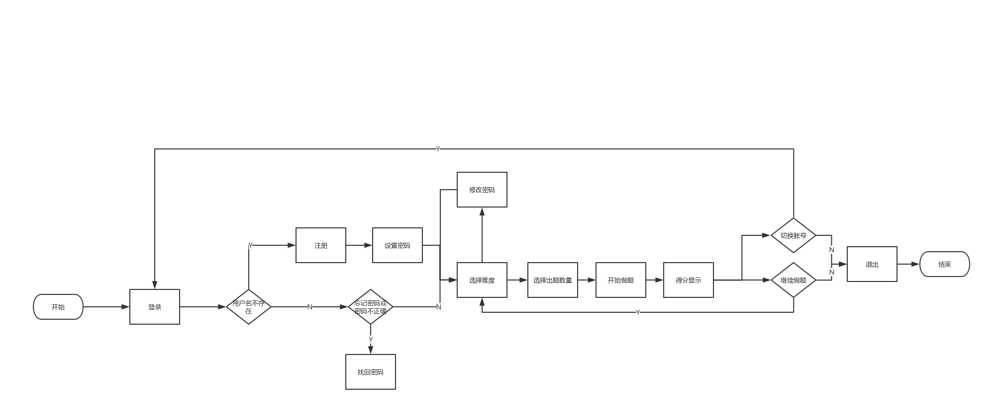
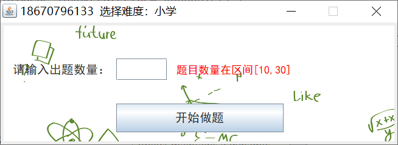

原文连接:https://www.cnblogs.com/include645829461/p/11605098.html
【写在前面】这次是复用个人项目进行结对编程，其实主要复用的就是凌老板的出题部分和我的文件读写部分，其余部分都是新学的。在这次编程中也涨了很多知识，其中最最最让人哭笑不得的就是：两个人用了不一样的编辑器，凌老板用的IDEA，我用的eclipse，虽说都是java，但是最后写出来的项目导致不能直接导入，百度了很多奈何本人太菜，所以最后只能让凌老板用eclipse编写程序。所以说，以后编写程序的时候最好要用同一个编辑器，要不然就会出现莫名其妙的报错。
还是先说一下结对编程的项目需求，这样大家好知道我们是干啥的，话不多说，正文开始：
一、项目需求
用户：
小学、初中和高中学生。
功能：
1、用户注册功能。用户提供手机号码，点击注册将收到一个注册码，用户可使用该注册码完成注册；
2、用户完成注册后，界面提示设置密码，用户输入两次密码匹配后设置密码成功。密码6-10位，必须含大小写字母和数字。用户在登录状态下可修改密码，输入正确的原密码，再输入两次相同的新密码后修改密码成功；
3、密码设置成功后，跳转到选择界面，界面显示小学、初中和高中三个选项，用户点击其中之一后，提示用户输入需要生成的题目数量；
4、用户输入题目数量后，生成一张试卷（同一张卷子不能有相同题目，题目全部为选择题），界面显示第一题的题干和四个选项，用户选择四个选项中的一个后提交，界面显示第二题，...，直至最后一题；
5、最后一题提交后，界面显示分数，分数根据答对的百分比计算；
6、用户在分数界面可选择退出或继续做题；
小初高数学题目要求见个人项目。
二、任务分工
本次任务，我们没有像许多同学分为了前端和后端，因为考虑到以后人才都是比较全方面的，所以我们是按功能点分的，这样两个人就都可以掌握前端和后端的知识。
李晓彤：功能点1、2、3
凌嘉文：功能点4、5、6
其中我认为难点就是：功能点1中手机注册码以及功能点4中要计算正确答案的算法。
三、具体结果&实现讲解
1.软件操作流程图

2.登录界面
实现原理：可以看到在账号后面的内容框里是灰色的，这里的效果就是如果框内没有内容，那么就会显示默认的提示文字，如果框内有内容或者是鼠标点击了，那么提示文字就会消失。这里注意登录和找回密码都要判断是否存在该用户，故要有个专门的txt文件存储用户名和密码。
容易忽视的点有：1.找回密码时用户不存在：找回密码的时候容易想到直接给用户密码，但是如果用户不存在就GG了，所以一定要考虑用户不存在的情况。
3.注册界面
实现原理：这里可以看到，框内灰色的实现和登陆界面的内容框内灰色文字的实现原理相同，都是用了继承FocusListener后来修改一系列的参数。然后重点来了，这里的“请输入正确的验证码”是采用了多线程编程，这样可以实时显示用户输入的结果是否正确。这样也可以省去检测按钮和减少用户操作，提升体验感。这块背后的算法是利用了阿里云的短信验证功能。这块浪费的时间最多，各种调试和bug修改，这里需要注意的一点就是：

阿里云的这里，一定填的是你申请的模板号码，而不是具体模板内容。就因为这点，改了两天bug，后来是用阿里云在线生成代码后才发现自己这里错误的（他会提示模板不合法）。
容易忽视的点：注册过的用户不能重复注册，还有就是要注意多线程编程，以及阿里云短信验证。这个阿里云的具体操作有百度链接，我就不过多赘述。
4、设置密码：
实现原理：还是采用了多线程编程，才能让提示框中红色字内容实时显示
容易忽视的点：多线程编程中一定要初始化框内的内容，不然回报空指针错误，而且在run中也一定要先判断框中有没有东西。
5、选择难度
实现原理：由于是用的可视化编程，所以也没什么可以注意的地方，就是背景图片一定要在最下层，别的没什么要注意的了。
容易忽视的点：无。
6.修改密码
实现原理：还是多线程编程，没的说。
容易忽视的点：
1.这里要做一个判断，就是他输入的新密码一定只能包含大小写字母和数字。
2. 红框未消失的时候点击下一步无效。
7.选择数量

实现原理：这里没有用多线程编程，因为后续报错以及String类型转成int类型判断数量是否合法，还有输入的是否是数字。各种报错让我最后弃用了多线程编程。他刚开始框内会显示10作为默认的出题数量，但是同样的，如果红框不消失的话开始做题按钮也是无效的。
容易忽视的点：输入的不一定就只是数字，还有可能是各种字符和空格，这里就只能输入数字，多一个空格也不行。
8.出题
实现原理：这里主要就是计算问题以及随机出结果，这个随机出的结果不能和正确结果相同。上一题按到最前面时要出现“已经到第一题了”的提示。这个计算的算法是这样实现的：
把一个式子最多有五个操作数，那么先从括号算起，一遍遍遍历这个式子，先处理三角函数，然后处理根号和平方，之后是乘除，最后才是加减。也就是先算每一个项的数，再扩大这个项的范围（这里只是将项的特征做了改变，因为有五个操作数，所以操作数特征从左到右分别为1~5）。这里项的概念借助了凌老板的个人项目中有关计算的部分。
容易忽视的点（改bug的时候发现的）：
1.不能记住上一题的结果
2.上一题至最前面时没有提示
3.重新出题后，会把上次做题的结果记住，而不是清空重来。
4.算式太长显示不了-----计算最长能显示的算式，然后判断如果算式长度超过了，则重新生成算式。
5.结果太长，一个项显示不了--------把4个项从占一行变成了每行一项。
9.得分
实现原理：因为有上一题的功能，所以就要记录每一个选项，最后算得分，而不是一边选一边算。最后把分数强制转化为int类型就可以了。
容易忽视的点（改bug的时候发现的）：分数如果不转化为int类型，可能导致显示不完全。
四、代码可能出现的问题
1.发送短信不成功：那你可能要联系管理员：李晓彤，告诉她欠费了要交钱了。
2.存储新注册的用户信息，要根据你上次操作user.txt的光标所处位置，所以他有可能是连在上一个用户的后面，也有可能是另起一行，这就可能导致改密码的时候出现不成功的bug。
五、思考与总结
这次编程可谓是用时很长，而且克服了种种艰难。总之就是：受益匪浅，膜拜凌老板的算法，以及佩服自己能改完一个又一个的bug。从这次编码中领悟到一个道理：coding不是最重要的，thinking才是！bug复bug，bug何其多！